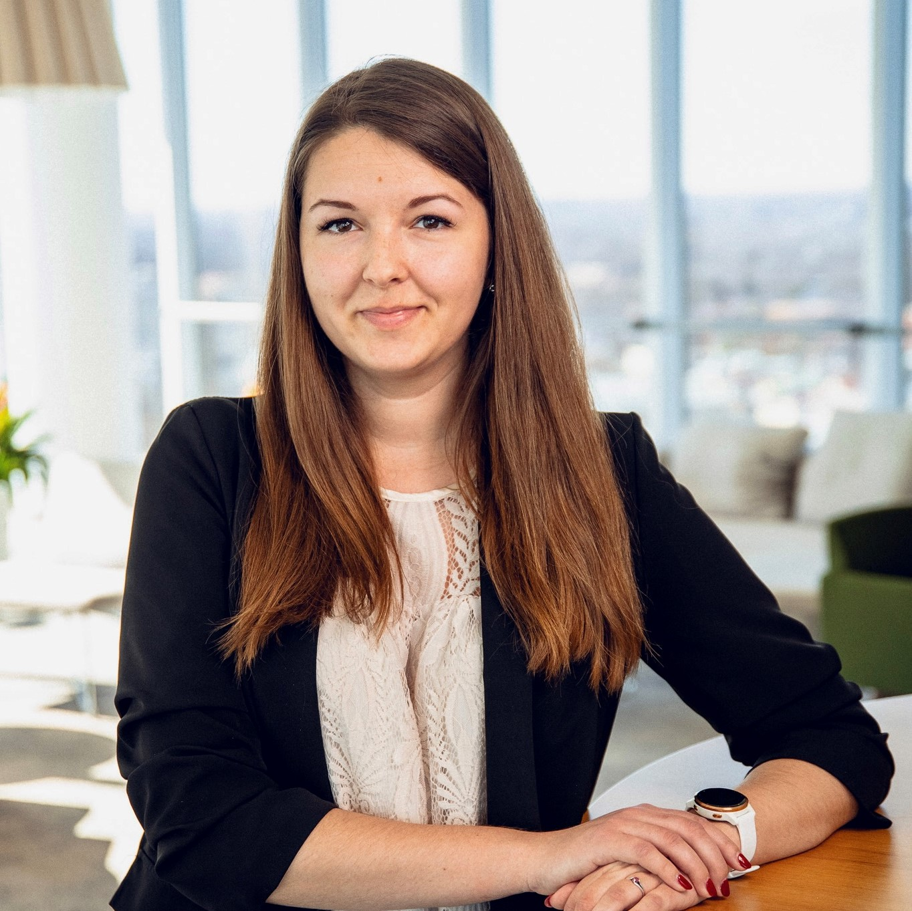

My CV Template
Sabīne Ruža
Description
Ambitious and self-motivated person who is seeking for new opportunities - currently learning and developing my competencies in IT field.
My current job description includes development of document management area - lead and supervise the implementation of projects related to documents management (local and Baltic projects). Coordinate internal Document Management system developments, identify business needs, collect input and compile business cases for DM system improvements, requirement delivery to IT and JIRA tasks review. Participation in quality assurance and testing.
Additionally I coordinate e-signing desktop application updates, execute tests, and ensure support for employees about e-signing and e-signature signing tools.
Skills:
- JIRA
- Sharepoint
- Software Testing
- Quality Assurance
- Document Management
- Project Management
Education:
- Riga State Technical School
- RISEBA University of Business, Arts and Technology
Additional Studies
- University of Latvia "Introduction to software testing QT1"
- Riga TechGirls "Discover Tech"
Experience:
- Caverion Latvia
- Swedbank AS
Language skills:
Latvian, English, Russian